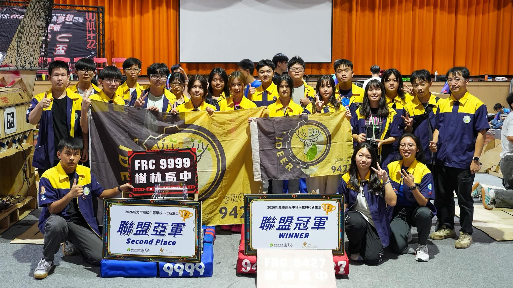

Java 加 WPILib,Command-based 架構。每個機構獨立控制，參數用實測決定，不套公式。
雙手把操作，搖桿不加負號、實測校正。
手臂與滾輪各自獨立控制。
每個機構自己的 PID。飛輪到速才送球，避免射不準。
用實測轉速與電壓補償，而不是套公式。
手動、自動、按鍵三個分頁，不用開程式碼就能改。設定存成 auto.json、tuning.json、bindings.json，機器人程式直接讀。桌面一鍵啟動，隊友也能改自動路線與按鍵。
自動模式第一步。
手臂放下、滾輪轉動。
飛輪到速再送球。
Unity 桌面軟體，獨立 exe。照機器人 code 對齊行為，不套公式。
獨立 exe,GitHub 發佈。
讀 Java 對齊行為，不套公式。
2026 賽季場地、球與射擊。
增量更新器，加上自動測試。
2026/11/01，天主教恆毅高中。同校兩隊，雙雙站上領獎台。
我的角色:現場修改機器人程式、擔任 driver。

9999 與 9427 合照，2026/11/01
用 AI 協助取還車影像判讀。2026/10/13 送出初賽，設計重點是手機端擋掉拍不好的照片，雲端只精判還車影像。
團購分貨要花 2 到 3 小時還會分錯。訪談後做成兩種檢視、打勾連動。
開啟Python 自製爬蟲。遵守 robots.txt，變更時自動通知 Discord。
把評量卷 2 到 7 整理成可互動的複習網站。
FRC 參賽、模擬器與小工具上線、AI 專題、英檢初級(11/07)。
APCS、資訊競賽、AIS3 資安，作品集定稿。
學測 2029/1。特選與個人申請並行，備審與讀書計畫。
日期以主辦公告為準。